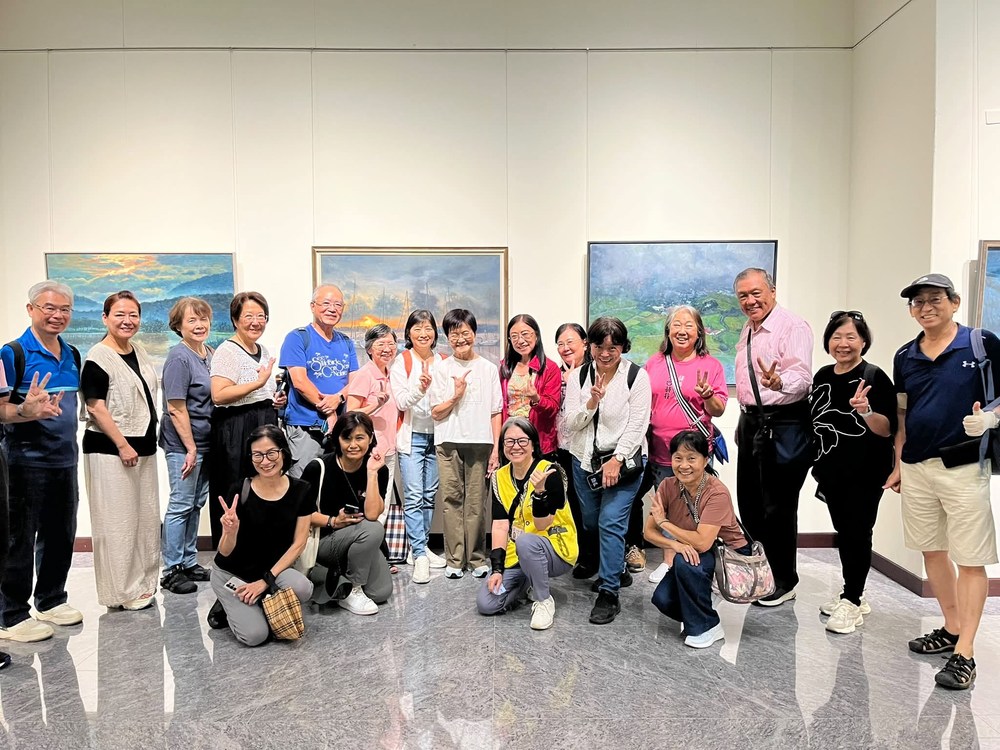
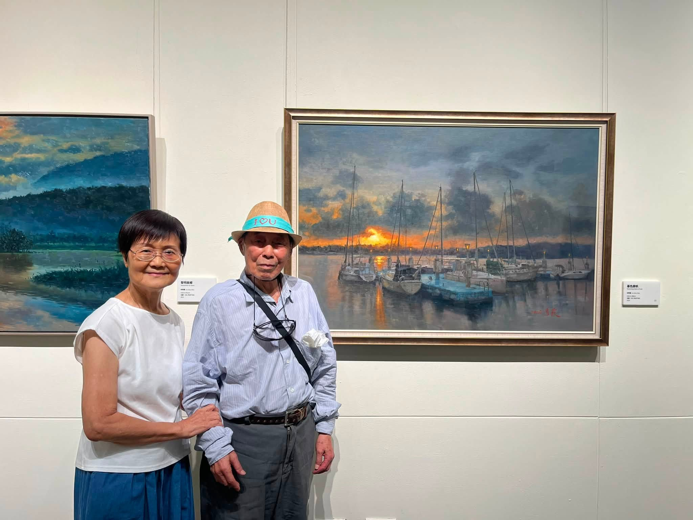
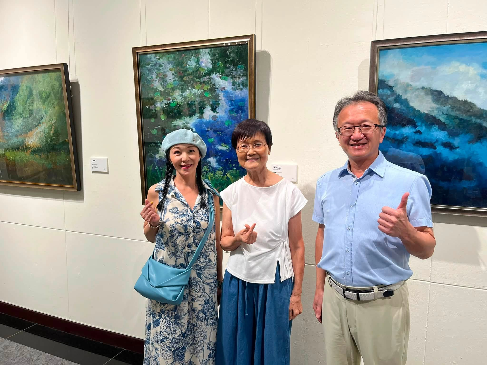
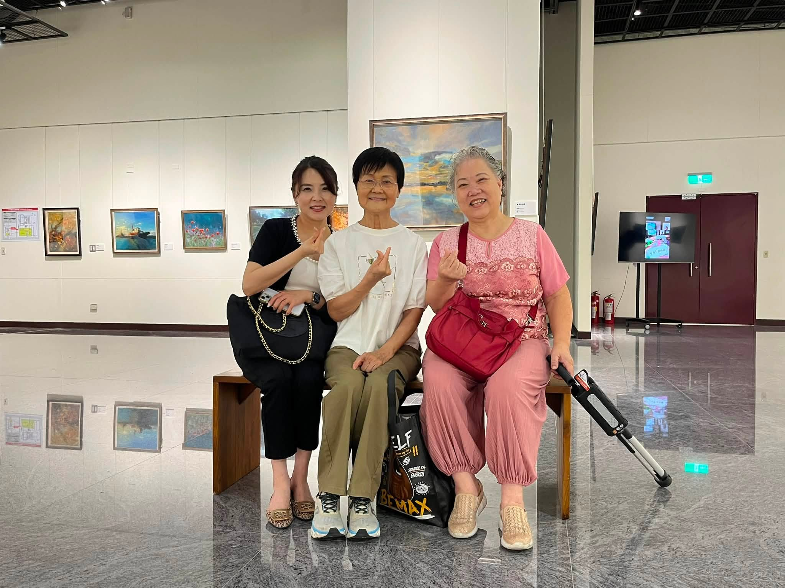
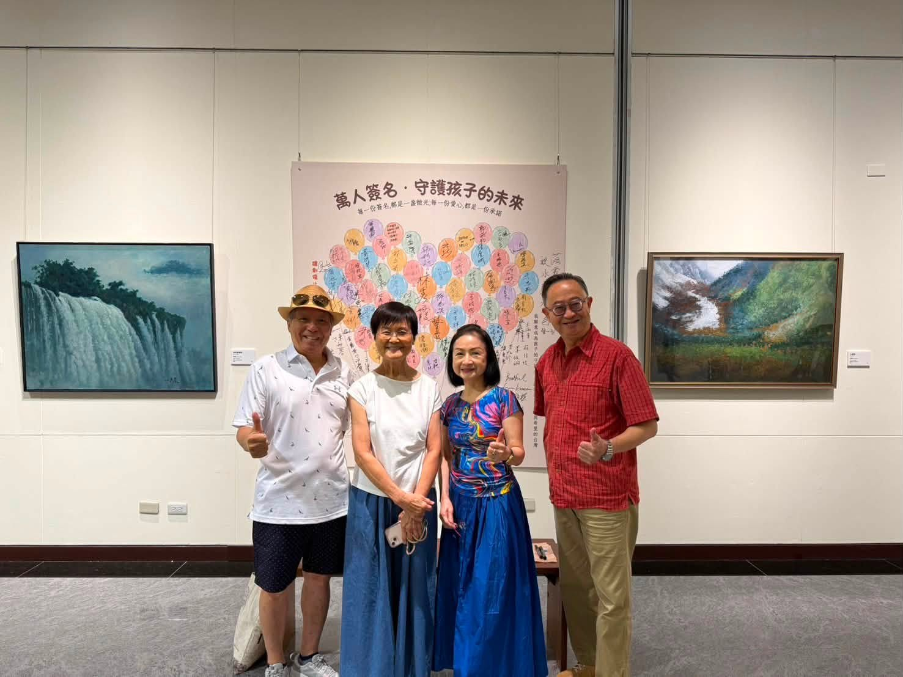
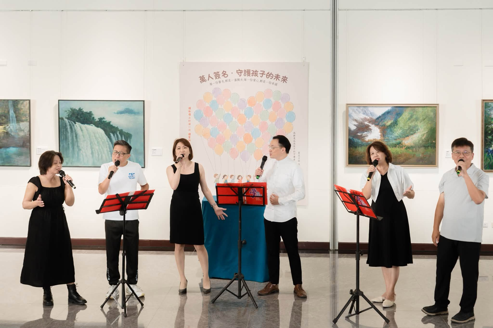

活動紀錄

「浮生藝憶・微光傳愛」展期活動紀錄
「浮生藝憶・微光傳愛」不只是一場油畫展，也是一段把目光帶回孩子身上的旅程。展期中，我們以 21 則公開文字紀錄，從作品、展場與日常陪伴出發，寫下對孩子的理解與期待。
以下內容整理自協會 2026 年 8 月 Facebook 公開排程草稿，並配上已獲同意使用的展場與成人活動照片。這份紀錄不揭露兒少個資、不虛構個案成果，也不取代正式服務資訊。
展期紀錄
一場畫展，想讓更多孩子被看見
2026 年 8 月 10 日 10:45・artwork crowd 01.jpg
走進中正紀念堂的展場，第一眼看見的是一幅幅油畫。有人停在畫前慢慢看，有人拿起手機留住喜歡的顏色，也有人在作品前和朋友聊起記憶裡的一段風景。
但這次「浮生藝憶・微光傳愛」想說的，不只有藝術家的創作故事。
畫作讓人停下來，是因為它把一段感受留在眼前；而我們關心孩子，也正是希望大人願意多停一下，不急著用表現、成績或一句話定義他們。當一個孩子正在不安、受傷或困惑時，他需要的往往不是立刻被糾正，而是先有人願意看見。
每一幅畫都有自己的色彩與筆觸。每一個孩子也是。
展期至 8 月 27 日，歡迎來到展場，讓藝術帶我們練習一件很重要的事：好好看見一個人。
#台灣微光希望關懷協會 #微光傳愛 #讓孩子被看見
展期紀錄
一幅畫，只有一次相遇

2026 年 8 月 11 日 12:35・artwork gallery 05.jpg
有人問創辦人：畫冊裡看過的作品，為什麼這次展覽沒有出現？答案很簡單，因為它已經被一位珍惜它的人收藏了。
接著又有人問，那可不可以畫一幅一模一樣的？
創辦人的回答一直很堅定：不可以。
一幅畫記錄的是那一天的光線、心情、眼前的風景，以及畫筆落下時獨一無二的生命經驗。它不是可以大量複製的商品，而是一段被好好完成、被好好珍惜的相遇。
我們想到孩子時，也常有同樣的感受。沒有兩個孩子會用同一種方式長大，也不該用同一把尺要求他們。有人需要多一點時間說出心事，有人需要一個安全的空間整理情緒；重要的不是把每個人修成一樣，而是讓他有機會長成自己。
每一幅畫都只有一次。每一個孩子，也都值得被如此珍惜。
#微光傳愛 #讓孩子被理解 #藝術與陪伴
展期紀錄
當人潮走進展場，我們更希望大家看見的是

2026 年 8 月 12 日 08:15・artwork gallery 03.jpg
這幾天，展場裡有許多溫柔的片刻。有人安靜站在畫前，有人帶著家人慢慢繞一圈，有人看完後回頭，再看一次剛剛沒有看夠的作品。
我們很感謝每一次停留、每一句鼓勵，也想把這份感動說得更清楚一點。
一幅畫的背後，是創作者累積的生命經驗；而這場展覽所連結的，是更多正在成長中的孩子。有些孩子面對的是難以說出口的情緒，有些家庭正在找一個能安心求助的方向。對他們來說，最需要的常常不是一句很快的答案，而是一位願意聽、一個願意等的人。
看畫時，我們會願意花時間理解色彩和線條；陪伴孩子，也需要這樣的耐心。
願每一次走進展場，都不只留下美的記憶，也讓我們更願意用理解和尊重，陪孩子走過他正在經歷的路。
#台灣微光希望關懷協會 #看見孩子 #微光傳愛
展期紀錄
畫作之外，是一個願意停下來的社會

2026 年 8 月 13 日 10:45・artwork gallery 02.jpg
看畫，有時是一件很安靜的事。
我們站在作品前，不一定馬上懂得作者想說什麼。於是會多看一會兒，看看顏色怎麼堆疊、光從哪裡進來、畫面為什麼讓人想起自己的某段記憶。這份不急著下結論的停留，其實很珍貴。
陪伴孩子也是如此。
孩子有情緒、有反應、有沉默的時候，大人很容易先問：「你怎麼了？」接著急著找答案、急著把事情處理好。但有些時候，他真正需要的是一個不催促的陪伴：你可以慢慢說，我會在這裡聽。
微光相信，理解不是很複雜的事，它常常從願意停一下開始。停下來聽，停下來看，停下來相信每個行為背後都有一份感受。
願我們在欣賞藝術的同時，也練習成為一個願意為孩子停下來的大人。
#讓孩子被理解 #微光傳愛 #藝術陪伴
展期紀錄
為什麼藝術可以成為陪伴

2026 年 8 月 14 日 12:35・artwork gallery 04.jpg
有些感受，孩子不一定知道怎麼說。
他可能只說「我不知道」，可能突然不想講話，也可能把心裡的擔心藏在一個看起來很小的反應裡。這不是孩子故意不配合，而是他還在學著辨認、整理和表達自己的情緒。
藝術提供了一種不同的入口。當孩子拿起畫筆、選擇顏色、慢慢把畫面填滿時，不必急著說出完整的句子，也不用擔心答案對不對。他可以先用自己的方式，把心裡的感覺放到紙上。
藝術不是替孩子貼標籤，更不是要替他判斷什麼。它是一個安全的空間，讓感受有出口，讓陪伴的人有機會更靠近孩子的內心。
微光一直相信：當孩子知道自己的感受可以被接住，他也會慢慢知道，自己值得被好好對待。
#藝術療癒 #讓情緒被看見 #讓孩子被理解
展期紀錄
每一道微光，從願意看見開始
2026 年 8 月 15 日 08:15・artwork gallery 03.jpg
午後的光落在畫布上，原本安靜的顏色，忽然有了不同的層次。看著展場裡的作品，我們常想到：原來光不一定很強烈，它也可以只是剛好照亮一個原本沒有被注意的角落。
陪伴孩子也是一樣。
我們常以為要做很多事，才能帶來改變；其實有時候，一次認真聽完、一句不急著責備的話、一個願意留在身邊的時刻，就已經很重要。這些看起來很小的事，對一個正在害怕或孤單的孩子來說，可能是他願意再相信世界一點點的開始。
微光不是遙遠的大事。它可以是一個大人願意多問一句「你還好嗎？」也可以是一個孩子終於相信「我的感受有人在意」。
願我們都把這樣的光，留給身邊正在長大的孩子。
#微光傳愛 #讓孩子被看見 #陪伴的力量
展期紀錄
這個週末，為孩子留一點時間

2026 年 8 月 16 日 10:45・opening 02.jpg
週末的展場，常常比平日多了一些從容。有人帶著家人一起來，有人和老朋友約在這裡見面，也有人只是想離開匆忙的行程，在畫前安靜待一會兒。
我們很喜歡這樣的時刻。因為藝術不一定要用很專業的方式欣賞，它也可以只是讓人暫時放慢腳步，重新感覺眼前的人、眼前的景、眼前的自己。
而孩子最需要的陪伴，也常常不是安排得滿滿的活動，而是一段真正屬於彼此的時間。放下催促，放下「你應該要怎樣」，好好聽他說一件今天發生的小事，或只是和他一起坐著、一起看一幅畫。
這個週末，如果你正好有空，歡迎到「浮生藝憶・微光傳愛」走走；也邀請你把這份慢下來的時間，帶回家給孩子。
#親子陪伴 #微光傳愛 #讓孩子被看見
展期紀錄
讓情緒被看見，讓孩子被理解
2026 年 8 月 17 日 12:35・artwork gallery 04.jpg
每個孩子都會有情緒。開心的時候會笑，委屈的時候會哭，生氣的時候也可能把門關起來、不想說話。
我們希望孩子知道，情緒沒有好壞。它像一個訊號，提醒我們：心裡有一些事情正在發生，需要被好好聽見。
大人面對孩子情緒時，最不容易的，也許是先不急著要求他冷靜、不急著告訴他「這沒什麼」。因為對孩子而言，那份難過或害怕是真的。如果有人願意先說：「我知道你現在不好受，我陪你一起想想。」孩子才可能慢慢學會認識自己的感受，也相信自己不必一個人承擔。
微光所做的陪伴，始終從理解開始。看見情緒，不等於放任行為；而是先找到孩子真正需要的是安全、支持，還是有人願意和他一起走一段。
讓情緒被看見，孩子才更有力量認識自己。
#情緒教育 #讓孩子被理解 #台灣微光希望關懷協會
展期紀錄
我們想陪伴的，不是一個標籤
2026 年 8 月 18 日 08:15・artwork gallery 05.jpg
有時候，大人很快就會替孩子下一個結論：他是不是不夠專心？是不是太敏感？是不是太愛哭？
但一個行為背後，可能有很多原因。孩子也許在害怕，也許正在適應新的環境，也許只是還找不到能好好表達的方法。當我們只記住一個標籤，就很容易錯過他真正想說的事。
在展場裡，每一幅作品都有不同的顏色和節奏。有些畫強烈、有些畫安靜；我們不會因為它們不同，就說哪一幅比較不對。孩子也是一樣，他的特質、他的步伐、他的感受，都值得被好好理解。
微光希望做的，不是替孩子決定他是誰，而是在他需要的時候，陪他慢慢認識自己、找到可以安心長大的力量。
少一點標籤，多一點理解。這是我們想一起練習的事。
#看見孩子 #理解代替標籤 #微光傳愛
展期紀錄
一場展覽，很多人的一起成全
2026 年 8 月 19 日 10:45・artwork crowd 01.jpg
一場展覽能夠被看見，從來不是一個人的事。
從作品的整理、場地的布置、開幕當天的演出，到每一位走進展場、停下腳步的朋友，都是這次「浮生藝憶・微光傳愛」的一部分。有人帶來專業，有人帶來時間，有人帶來一句真誠的鼓勵；這些看似不同的力量，讓一個想法慢慢變成了真實的相遇。
協會的陪伴工作也是如此。守護孩子，不會只靠單一角色完成。當家庭、專業人員、學校、社區與願意關心的人能夠彼此連結，孩子就多了一些被接住的可能。
謝謝每一位參與這場展覽的人。你們不只是來看畫，也讓「讓孩子被看見」這句話，有了更具體的樣子。
願我們繼續把各自的一點力量放在一起，成為孩子成長路上穩穩的支持。
#微光傳愛 #一起守護孩子 #台灣微光希望關懷協會
展期紀錄
畫裡有記憶，也有孩子未來的可能
2026 年 8 月 20 日 12:35・artwork gallery 05.jpg
有些畫，讓人想起走過的地方；有些畫，讓人想起曾經陪在身邊的人。顏色、光影和筆觸，會把一段原本說不清楚的記憶，慢慢帶回心裡。
創作之所以動人，不只是因為畫面好看，而是因為它把生命裡重要的感受留下來。當我們站在畫前，常常也會想起自己曾經被理解、被陪伴，或很希望有人能懂的時候。
孩子正在長大的每一天，也都在累積自己的記憶。大人說過的話、遇到困難時有沒有人陪、感到害怕時有沒有一個安全的地方，會一點一點影響他怎麼看待自己與世界。
我們無法替孩子走完未來的路，但可以在今天為他留下一段溫柔的經驗：當你不容易的時候，有人願意理解你；當你需要幫忙的時候，你不是孤單的。
#微光傳愛 #陪伴孩子 #讓孩子被看見
展期紀錄
從畫室到展場，我們為什麼繼續做
2026 年 8 月 21 日 08:15・artwork gallery 02.jpg
一幅畫從畫室走到展場，中間經過很長的時間。構圖、調色、反覆觀看、等待顏料乾透，再決定下一筆要不要落下。很多事情並不會在第一次嘗試就完成，而是在不斷調整中，慢慢長出最適合它的樣子。
陪伴孩子也沒有捷徑。
有些改變很快就能看見，有些改變需要很長的時間。有時候孩子願意多說一句話、願意再走進一個活動空間、願意相信一位大人，都是很不容易的進展。這些時刻未必轟轟烈烈，卻值得被珍惜。
我們繼續做，是因為相信每一個孩子都有自己的節奏；也相信持續、專業而有溫度的陪伴，能讓他在需要的時候，不必獨自面對。
畫展正在進行，陪伴也一直在路上。謝謝每一位願意和我們一起看見孩子的人。
#藝術與陪伴 #微光傳愛 #守護孩子
展期紀錄
看見，不是看一眼就離開
2026 年 8 月 22 日 10:45・artwork gallery 03.jpg
走進展場時，我們常會先被一幅畫吸引。也許是鮮明的色彩，也許是熟悉的風景。但真正讓一幅作品留在心裡的，往往不是第一眼，而是我們願意再多停一會兒。
多看一會兒，才會注意到畫面裡原來有細小的光；多停一會兒，才會發現某個角落藏著很深的情緒。
看見孩子也是這樣。
不是看見他的表現就結束，而是願意再問一問：他最近是不是有壓力？他今天的沉默是在保護自己嗎？他需要的是提醒，還是一個可以安心說話的空間？
真正的看見，需要時間，也需要一點耐心。它不保證我們立刻懂得所有答案，但會讓孩子知道：有人願意認真對待我的感受。
這也是微光想和大家一起學習的陪伴方式。不是匆忙地評斷，而是安靜地靠近。
#讓孩子被看見 #陪伴需要耐心 #微光傳愛
展期紀錄
畫展進入最後一週
2026 年 8 月 23 日 12:35・opening 02.jpg
「浮生藝憶・微光傳愛」進入最後一週了。
回想這段時間，展場裡有許多讓人記得的畫面：有人在作品前停留很久，有人帶著朋友再來一次，有人看見「守護孩子的未來」主視覺後，安靜地讀完上面的每一句話。藝術讓我們相遇，也讓一些原本不容易談起的關心，有了被說出來的機會。
這次展覽並不是要用感動取代行動，而是希望從一個畫面、一段故事開始，讓更多人願意理解：孩子的安全與成長，需要整個社會一起在意。
最後一週，歡迎還沒有來過的朋友到中正紀念堂走走。也邀請已經來過的人，把你在展場感受到的那份溫柔，帶回每天與孩子相處的時刻。
展期至 8 月 27 日。我們在展場等你。
#浮生藝憶微光傳愛 #最後一週 #讓孩子被看見
展期紀錄
這些畫，想替誰說話
2026 年 8 月 24 日 08:15・artwork gallery 04.jpg
展場裡的畫，說的是風景、光線、記憶，也是創作者一路走來看過、感受過的生命片段。
而我們在這場展覽裡所關心的孩子，也許還不總能把自己的故事說得很完整。有些孩子不知道怎麼開口，有些孩子害怕說了沒有人懂，有些孩子只是需要有人先告訴他：你可以慢慢來。
所以，我們一直希望藝術不只停留在欣賞。當一幅畫讓我們感到被理解，也許就能提醒我們，生活裡還有很多人正在等著被理解。
孩子不需要替自己證明「我夠好，才值得被幫忙」。他需要的是安全、尊重，以及在困難的時候有人願意站在身邊。
這些畫想說的，也許正是這件事：每個生命都有自己的故事，而每個故事都值得被好好聽見。
#讓孩子被看見 #微光傳愛 #藝術的力量
展期紀錄
讓關心不是一次性的感動
2026 年 8 月 25 日 10:45・artwork crowd 01.jpg
看完一場展覽，我們可能會帶著感動離開。那份感動很真實，也很珍貴；但微光更希望，它不只停在離開展場的那一刻。
真正的關心，常常藏在日常裡。是看見孩子今天比平常安靜時，多問一句；是聽見他說不想去學校時，不急著責備；是當他有情緒時，先陪他把感覺說清楚，而不是只要求他快點恢復正常。
這些事情看起來不大，卻會慢慢累積成孩子對世界的信任。他會知道，原來自己有困難時可以求助，原來感受不必被藏起來，原來有人相信他能慢慢長大。
畫展會有結束的一天，但陪伴不必如此。
謝謝每一位因為這場展覽而願意多想一想、多停一停的人。願這份關心，成為孩子生活裡可以一直感受到的溫度。
#陪伴不止一刻 #微光傳愛 #讓孩子被理解
展期紀錄
最後兩天，把目光留給孩子
2026 年 8 月 26 日 12:35・opening 02.jpg
展覽剩下最後兩天。
這段時間，我們看見許多人因為畫作而停下腳步，也看見大家願意在展場裡聊起孩子、聊起家庭、聊起那些平常不容易被好好說出的需要。每一次這樣的交流，都讓我們更相信：關心不是少數人的事，而是每個人都能開始的一小步。
孩子的成長路上，最怕的不是遇到困難，而是在遇到困難時，覺得自己沒有人可以相信。當一個孩子知道大人願意聽、願意保護他、願意替他找到支持，他面對未來的力量就會不一樣。
如果你還沒有來到中正紀念堂第二展廳，這兩天歡迎來看看畫，也看看這場展覽想守護的心意。
把目光留給孩子，就是把一個更安全、更有理解的未來留給他們。
#最後兩天 #守護孩子的未來 #微光傳愛
展期紀錄
今天，是畫展的最後一天
2026 年 8 月 27 日 08:15・artwork crowd 01.jpg
今天，是「浮生藝憶・微光傳愛」在中正紀念堂展出的最後一天。
這段日子裡，我們從一幅幅作品開始，認識創作者對生命的感受；也透過一次次相遇，說起協會為什麼關心孩子、為什麼相信陪伴必須有理解、有尊重，也要有能夠持續下去的支持。
謝謝每一位走進展場的朋友。謝謝你願意停下來看畫、願意聽我們說關於孩子的故事，也謝謝你讓「微光傳愛」不只是一個展覽名稱，而成為很多人一起放在心上的事。
今天若有時間，歡迎到展場走走。帶走的不一定是一張照片，也可以是一個提醒：在生活裡，請記得多看見一個孩子的感受，多給一段關係一些耐心。
展覽今天結束，但我們願意陪伴、願意守護孩子的心，不會停在今天。
#畫展最後一天 #微光傳愛 #讓孩子被看見
展期紀錄
畫展結束，陪伴不會停在這裡
2026 年 8 月 28 日 10:45・artwork gallery 02.jpg
展場的燈光告一段落了，畫作會回到它們各自的位置，但這段時間累積的感受，仍會留在許多人心裡。
我們很感謝這次「浮生藝憶・微光傳愛」讓不同的人在同一個空間相遇。有人因為藝術而來，有人因為關心孩子而停下來；最後，我們一起看見的是同一件事：每個孩子都值得被好好對待。
一場展覽能做的，是打開一扇門。門後還有很長的路，需要持續的陪伴、專業的支持，以及更多願意理解的眼光。協會會繼續在服務與合作中，為孩子和家庭找出能夠被接住的方向。
謝謝所有參與、關心與分享的人。願你在展場裡感受到的那一點微光，回到日常後，仍能照亮一個孩子、一段關係，或一個願意重新開始的時刻。
#微光傳愛 #陪伴不會停 #守護孩子
展期紀錄
有些陪伴，不會停在一場活動之後
2026 年 8 月 30 日 12:35・artwork gallery 05.jpg
一場活動結束後，場地會恢復安靜；但對正在成長的孩子來說，生活不會因為活動結束就停止發生。
他仍可能在學校裡遇到壓力，在家裡有難以說出口的情緒，也可能在某個夜晚需要一個願意聽他說話的大人。這也是為什麼我們總是提醒自己：陪伴不是一次性的感動，而是一種持續願意在場的態度。
有時候，我們不需要馬上替孩子解決所有問題。先讓他知道「你可以來找我」，先讓他相信「我說的話有人會認真聽」，這份安全感就會成為他慢慢整理自己的起點。
微光相信，真正有力量的支持，不只出現在熱鬧的活動裡，也在每一個平凡卻不缺席的日常。
願我們都能成為孩子生命中，那個願意多留一會兒的人。
#持續陪伴 #讓孩子被理解 #台灣微光希望關懷協會
展期紀錄
8 月的微光，帶我們走向下一段路
2026 年 8 月 31 日 10:45・artwork crowd 01.jpg
8 月即將結束。回望這個月，我們因為畫展相遇，因為藝術停下腳步，也一次又一次談起：孩子的安全、感受與成長，值得被放在社會更重要的位置。
這個月裡，最讓我們感動的，不只是展場裡的畫作，而是許多人願意帶著好奇與關心走進來。有人第一次認識協會，有人重新思考自己能怎麼陪伴身邊的孩子，也有人只是靜靜地說：「希望每個孩子都能被好好照顧。」
這些心意，會成為我們往下一段路走的力量。
未來，協會仍會持續透過專業服務、藝術陪伴與社會連結，和孩子、家庭及每一位關心的人一起前行。路不一定總是容易，但只要有人願意看見、願意理解、願意不缺席，微光就能慢慢累積。
謝謝 8 月每一次相遇。下一段路，我們繼續一起走。
#微光傳愛 #守護孩子 #一起前行
← 回到展覽活動頁 回到最新消息